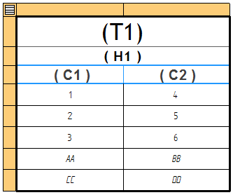
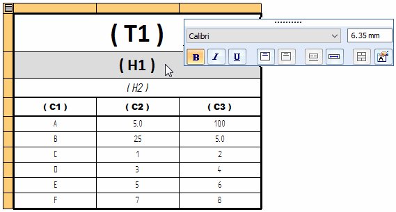
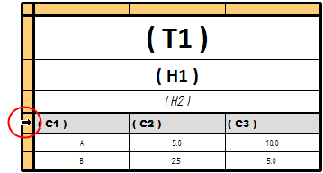
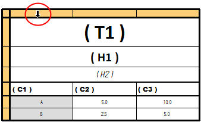
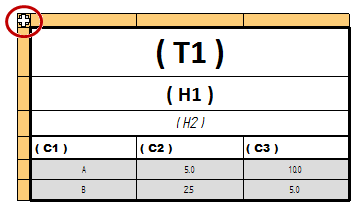

Edit a table cell directly
Use direct table editing to replace the data in a table cell.
-
On the drawing sheet, double-click a table.
An orange edit frame is displayed around the top-left corner of the table.

-
Click the first data cell you want to edit, and then type the new value or the new text.
Note:The color of the table cell indicates whether it is eligible for editing. For more information, see Table cell color and value edits.
-
Press Enter.
A Table Format command bar is displayed.
Example:
-
Make font, text format, text size, and text orientation changes to the cell as needed.
The options that are available depend on the type of table and the type of cell selected for editing. For more information,see:
-
Press an arrow key to save your entry and move to the next data cell you want to edit.
You also can press the Tab key to move to the next cell on the row.
-
Press Esc (or click in white space) to exit edit mode and save the changes.
-
You can use the Undo command to undo a formatting or content change to a cell.
-
You can select multiple data cells using a variety of techniques, including using the orange edit frame.
To
Use this technique
Select a single cell.
Click the cell, or use the arrow keys to move to the cell.
Select a range of cells.
Shift+click to select contiguous cells.
Click+drag a box around the cells that you want to select.
Click a cell, and then use Shift+arrow keys to expand the selection set.
Select nonadjacent cells or cell ranges.
Select the first cell or range of cells, and then use Ctrl+click to select the additional cells.
Add and remove cells from the selection set.
Ctrl+click.
Select all cells on a row.
Click the row indicator along the left side of the orange edit frame to select all of the cells in that row.

Select all data cells in a column, across all table pages.
Note:Does not select the column heading or title rows.
Select the column indicator using the orange edit border along the top of the table:

Select all data cells in the table.
Note:Does not select the column headings or title rows.
Click the Select All button in the top-left corner of the orange edit border.

How do I
Align a table to a border or title blockShow and edit property text in a table cell
Change the font size of table cells with direct edit
Separate and rejoin table pages
Extract model information into a model table using property text
Sort table contents
Copy table contents to the clipboard
Add a table title
Manipulate table rows and columns
Learn more
Editing a table directlyTable cell color and value editing
Arranging table pages